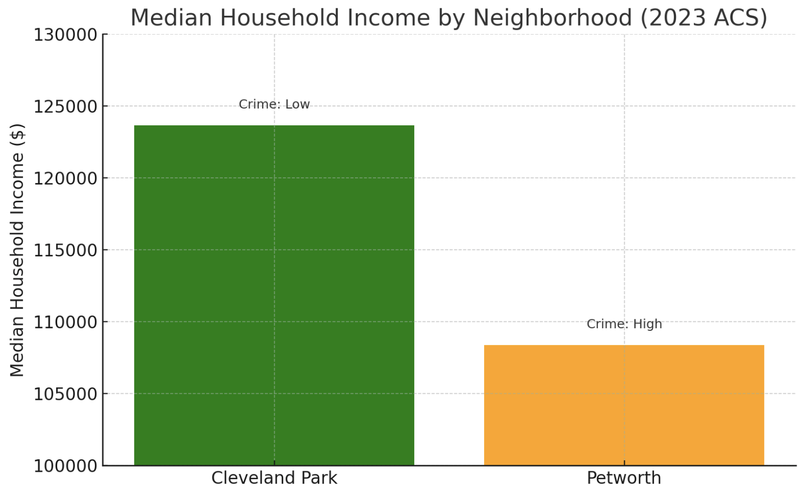
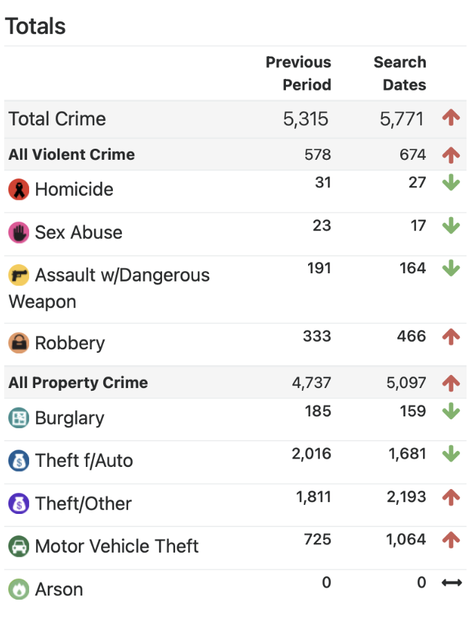
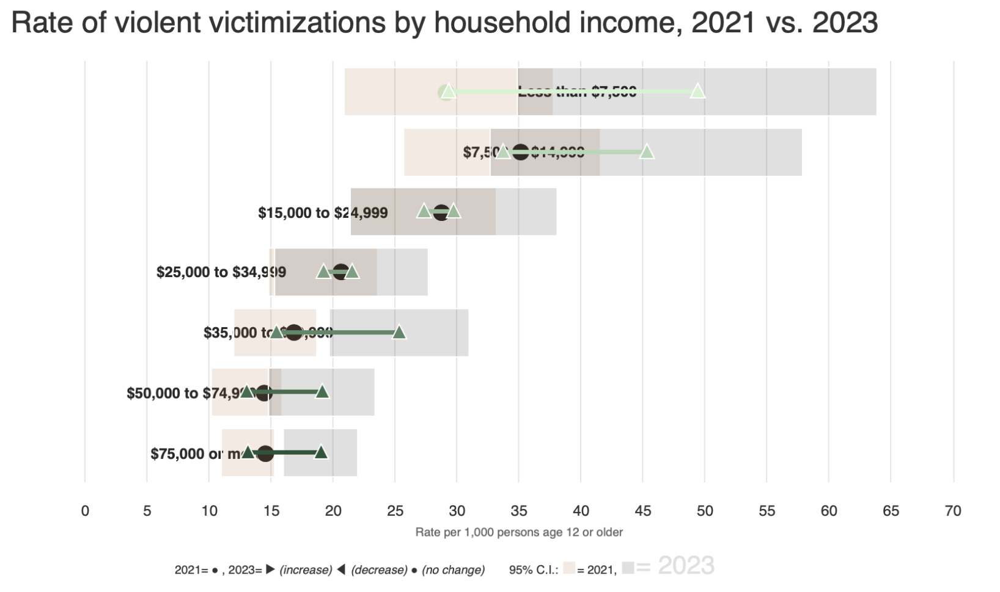

Data and Analysis
Using 2023 American Community Survey data and DC crime statistics, I compared Cleveland Park and Petworth on three key metrics: income, reported crime totals, and perceptions of safety.
Income Levels
- Cleveland Park: $123,653
- Petworth: $108,377
Crime Reports (2023)
- Cleveland Park: 📉 Low
- Petworth: 📈 Higher, but not extreme
City-Wide Perception of Crime
Perception of victimization often exceeds reported incidents, especially in areas like Petworth.
Income Comparison Bar Chart
Crime Totals by Neighborhood

Petworth Median Income

Cleveland Park Median Income
Victimization & Perceived Crime
“While Petworth’s income is only slightly lower than Cleveland Park’s, perceptions of crime are vastly different. This gap suggests that crime perception is shaped by more than just income—factors like race, media, and neighborhood history all play a role.”